OUM |
Technique Overview |
||
Method Navigation |
Current Page Navigation |
||
|
|
||||||||
The purpose of this document is to provide a pragmatic, simplified Motivational Modeling technique for use in OUM. A Motivation Model is a formal description of the essence of why we choose to take a particular course of action or make specific choices. In the context of OUM, a Motivation Model provides guidance and validation for:
With the current increasing focus on fitness for business and business agility, it becomes even more important to capture and retain the business drivers for the engineering decisions behind the creation of software assets. In a traditional enterprise and development effort, software assets are acquired, created, and maintained according to locally understood departmental or even project needs. In such an environment the motivation for these assets are often expressed in narrow terms with little need for enterprise-wide, or industry standardized, semantics.
The value that Motivational Modeling brings to Enterprise Architecture (EA) led IT initiatives lies in the ability to prioritize efforts, justify decisions, and trace activities of the IT organization to strategic goals of the business, hence improving business/IT alignment. This adds tremendous value to initiatives such as SOA and BPM as it offers a clear understanding of which projects to undertake, which processes are currently most strategic to the company, and which services are most aligned with business strategy. By establishing a standardized model and associated semantics for describing business motivation the justification for the creation of IT artifact (Application, BPM Process, SOA Service, etc.) is more clearly communicated. Such an evaluation of business drivers for a given artifact also has enduring value in its lifecycle, enabling traceability to original motivation when determining whether it should be improved, retired, etc.
The core objectives of this technique are:
Use of Standards
Rather than “reinvent the wheel” this technique document refers to existing standards and established practices where possible. These practices may be current in force within our customer organization, or may simply be appropriate in their own right; however the approach of this Motivational Modeling technique is to use standards where applicable and to adapt or extend the customer processes to this. The primary standards and practices used here are the Object Management Group (OMG) Business Motivation Model (BMM), and the Strategy Map, an extension of the Balanced Scorecard. We will use the BMM as a definition of context of modeling terms and Strategy Maps as the mechanism and general process to collect and represent motivation. For further reading on the OMG and its many resources, Strategy Maps and the Balanced Scorecard, see the References section.
The BMM is intended to provide a standardized structure for the business-oriented description and evaluation of the drivers motivating a business plan. Though it offers a robust structure, it does not include a method for capturing motivation, nor does it offer guidance with business context. Our initial use of the BMM within this document is to establish a clear definition of semantics in the modeling process.
Having established the basic semantics of motivation based on BMM, we then apply a process based on the Balanced Scorecard called the Strategy Map. The Balanced Scorecard, developed by Robert S. Kaplan and David P. Norton, is designed to translate vision and strategy into objectives and measures across various financial and non-financial perspectives. The Strategy Map extends this concept by providing mapping between goals and objectives of different perspectives. This mapping helps to ensure that activities initiated as a result of Motivational Modeling can be traced back to financial objectives of the organization.
This technique concludes with the mapping of technical initiatives to the motivational model. Hence, activities related to IT initiatives can directly trace back to business goals and financial objectives. This provides a foundation for project, application, process and SOA service justification.
Motivational Model - The Motivational Model is a formal description of the essence of why you choose to take a particular course of action or make a specific choice. A Motivational Model begins with the vision and goals of the business and drive sufficiently deep into the supporting IT strategy. The result is a document which identifies:
Prioritized IT initiatives – Optionally, the motivational modeling approach can produce a prioritization of IT initiatives, based on the business initiative to IT initiative map.
See Task Step Details for all task steps below:
No. |
Step | Component | Component Description |
|---|---|---|---|
1 |
Capture Existing Motivation | Motivation; Existing Motivations, including Vision | |
2 |
Define Financial Goals | Financial Goals | |
3 |
Determine Customer Goals | Customer Goals | |
4 |
Determine Internal Process Goals | Process Goals | |
5 |
Determine Growth Goals | Growth Goals | |
6 |
Define Objectives and Strategy | Objectives and Strategy per Goal | |
7 |
Determine Initiatives | Initiatives per Objective | |
8 |
Map Technology Initiatives | Business to IT Initiatives Map | |
9 |
Prioritize Technology Initiatives | Prioritized IT Initiatives |
The OMG BMM establishes the semantics for describing “business” motivation. From its name alone we can see immediately that it is a “model”, that is to say, a description of motivation and NOT a process for “modeling” motivation; which of course, is our ultimate purpose for OUM Motivational Modeling. This semantic model may equally be applied to the “business” of IT, but not it’s technical execution (for example, the business purpose of a system, but not the engineering process of delivery etc.). For further reading on the OMG and the BMM, see the References section.
Spanning such topics as mission, goal, objective, strategy and tactic (“ends and means”), the standard Business Motivation Models provide semantic definition for the capture, retention, and traceability for the reasoning behind business decisions.
The “model” (or more accurately meta-model) is a formal means of expressing the semantics of motivation for business desires and actions; it is not intended that the BMM practitioners create diagrammatic representations of business motivation, but rather the diagrams presented here (and by the BMM) are merely a means of conveying the relationships of the language elements.
In defining a language in support of modeling business motivation, the BMM is similar to the approach taken by the IEEE 1471 standard which specifies the semantics of Enterprise Architecture. In both cases terms are defined and their relationships modeled to enable both consistency in practitioner usage and the foundation for the specification of repository tooling. The IEEE 1471 and the OMG BMM documents both use UML, although the original BRG BMM does not.
The BMM does not define Business Process, Rules, Policy, etc. but focuses exclusively on capturing the motivation for an action (such as execution of an engineering project, creation of an SOA service, etc.) and defining the language for the consistent expression of business motivation. Although often relevant in assessment and other aspects of motivation, organization structure is also beyond the scope of standard BMM.
BMM describes the “means and ends” of business plans and captures assessments about various types of influencers that may have the potential to impact the means and ends.
The BMM and associated standards are also intended to provide the basis for repository tooling and the exchange of associated models using mechanisms like XMI.
BMM is not a methodology, process or an approach.
For further reading about the BMM from the BRG, see the Business Rules Group. Various other documents were originated and/or referenced by the BMM (the Semantics of Business Vocabulary and Business Rules in particular). These standards are maintained by the OMG and can be found using reference 8 in the References section below.Look for the following related standards documents:
The OMG BMM not only endorses the BRG’s BMM as a standard but also presents its diagrams using UML: each noun concept in the BMM Concepts Catalog is represented as a class in the UML model while SBVR fact types are mapped to UML association names.
The OMG BMM is a meta-model for the standardization of descriptions of motivations for the elements of a business plan. An enterprise might create a BMM, following the meta-model approach, to establish the factors that motivate the creation of a business plan, and identify and define the elements of such a plan.
The BMM is made-up of four major areas of concern (the BMM document itself summarizes these into just two) which are in turn broken into other elements each with very specific meanings. The four high-level elements of the meta-model, “means”, “ends”, “influencers”, and “assessments” are shown in the following simplified representation of the BMM.
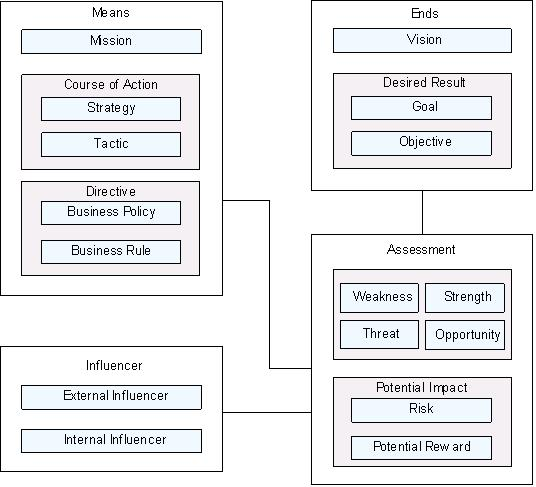
Fundamentally, “means and ends” refer to the strategies, tactics, and business policies and rules that the business might employ to achieve a desired result (the “ends”); along the way these are supported by assessments of things, such as, risk/reward or Strengths, Weaknesses, Threats, and Opportunities (see SWOT analysis).
If a business plan is used to specify what an enterprise wants to achieve, the elements of the business plan lay out the means necessary to achieve the ends (desired result, etc.). Motivation refers to the influencers that underlie the choices of means to serve the ends of each element of a business plan.
The BMM is not intended to be used as a business plan by itself. A business plan requires the support of numerous other factors that are external to the BMM, such as, organization models, business rules, business process models (BPMN and BPDM), etc. Other referenced elements of business models that might support the Business Motivation Model include a Common Business Vocabulary, such as OMG's SBVR. Boundaries between the various aspects of a complete business plan are not hard and fast however; there is, in fact, potential for considerable overlap and every organization is free to choose make distinctions appropriate to its own needs.
The following sections provide more detail on BMM and offer examples based on our fictional company, THFC.
In the diagram below the expression “business aspiration” is not a formal BMM term; instead it is used here to generalize the core “end” concepts, vision, goal, and objective.
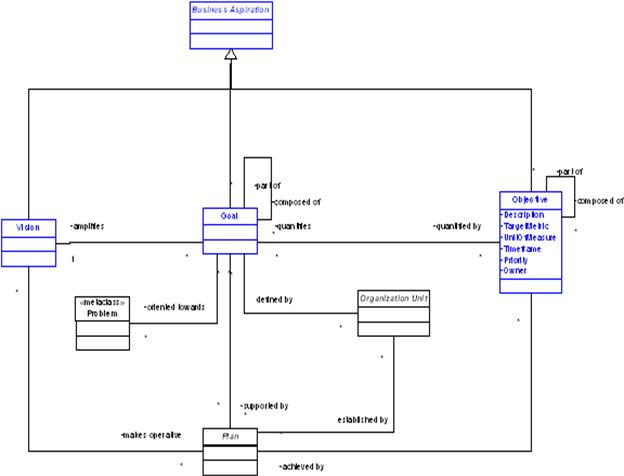
Under the BMM definitions the vision is an overall image of what the business aspires to become, it typically encompasses the entire enterprise and provides a long-term view: “the vision is the ultimate, possibly unattainable, state the enterprise would like to achieve.” The desired results, i.e., goals and objectives, provide more specific detail of the parts of the overall vision. The BMM distinguishes goals and objectives by defining the goal as a general, longer term, qualitative expression of an aspect of the vision; in contrast an objective is specific, time-boxed, and measurable (quantitative).
Earlier in this document, were some examples that are repeated below.
An example of a vision statement for the fictitious "Company A" might be:
"Company A"aspires to be the best consulting company in the field of large scale enterprise integration.
This is an example of a lofty target, it is not specific, offering no timeframes, nor metrics for success, but clearly distinguishes the business vision from other lower-level, potentially irrelevant, detail.
As can be seen from the diagram above a goal amplifies a vision and is quantified by objectives. The organization unit and problem elements are not defined by the BMM but their relevance is acknowledged by the standard. Organization unit is identified as a placeholder for a connection to an, as yet undetermined, external standard definition.
Amplifying the vision statement consider writing the goals as follows
to lead the industry in enterprise consulting
to be considered industry leads alongside Major Competitor Inc.
These are just some of the things that must be achieve to meet achieve the vision.
Making these goals attainable, time-boxed, and measurable you write objectives as follows
Within the next fiscal year "Company A" expects to be rated within the top three providers of consulting by Gartner.
More fine detailed objectives that are closer to the expense reimbursement example, but still aligned with the stated goals, might look like this
Reduce expense reimbursement cycle time to 10 business days for 97% of ER submissions by middle of the current fiscal year.
Eliminate manual ER exception processing.
The BMM suggests objectives statements might be guided by the popular project management idiom SMART (Specific Measurable Achievable Relevant Time framed).
A vision will be realized by the mission and desired results are support by courses of action, both linking “ends” to “means”: goals are generally supported by strategies while objectives are achieved by tactics.
Linking “ends” to “means” the BMM states that goals are generally supported by strategies while objectives are achieved by tactics. In our simplified model the link from “ends” to “means” occurs in the following diagram, in which a business aspiration is supported by a generalized “plan”.
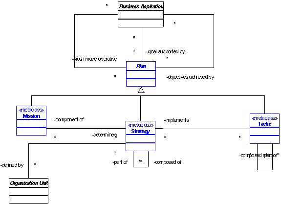
As with business aspiration, “plan” is not defined by the BMM: in fact, as was already stated, the definition of a “business plan” has much broader scope than motivation, which is only an aspect of the plan. Here you use a “plan” to link the “ends” (vision and its desired results, comprising goals and objectives) to the “means” (mission, courses of action comprising strategies and tactics).
The BMM defines the general term “means” as “any device, capability, regime, technique, restriction, agency, instrument, or method that may be called upon, or enforced to activate ends”. You can see from that definition that “means” refers to active aspects of a plan (as opposed to an outcome, the “ends”), whether a mission, a course of action (strategy or tactic), or directive (business policy or rule).
A mission, like its counterpart the vision, is high-level and takes a long-term perspective, and a mission makes a vision operative. The detailed parts of the mission are courses of action and directives.
A course of action is said to “channel efforts towards desired results” and they are governed by directives. Our simplified representations in this document replace means and course of action expressions with a generalization “plan”; this plan can be seen to be “governed by” directives in the diagram below.
Whether you use course of action or plan the important elements contained therein are strategies and tactics. A strategy is a component of a plan for the mission while a tactic is a course of action that part of a strategy and should implement a strategy. These relationships can be seen in the diagram above.
In relating means to ends once again, the BMM states that strategies usually channel efforts towards goals while tactics channel efforts towards objectives.
So far in the "Company A" example the statements of business vision and desired results have seemed far removed from the IT task of improving the expense reporting system, but it is here, in this portion of the motivation model, that you consider such things as IT systems as part of the means to achieve those results. So now consider a mission statement (still high-level and in purely business terms) that might make the vision operative:
Ensure our consultants are the best in the field of enterprise consulting.
To support this mission you establish courses of action that will channel efforts towards the desired results stated in the previous section. A strategy that can channel efforts toward our stated goals might be
Provide our consultants with the best training and tools to maximize their effectiveness.
In this obviously contrived example, you start to see a link between "Company A’s" business aspirations and IT by describing a tactic as part of the detail of the foregoing strategy, for example:
Integrate the ER applications to eliminate manual process steps and consistently reduce reimbursement cycle time.
Of course, this course of action supports the earlier stated, quantified objectives.
The BMM explains that directives are the concerns of governance and guidance and its components, business policy and business rule, are left to other standards for definition. The following diagram shows these relationships.
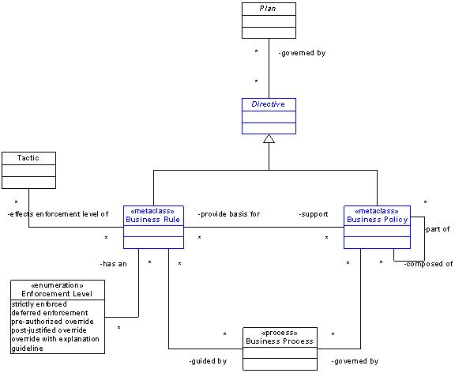
Directives govern courses of action (or the plan in the case of our diagrams here). A directive is intended to assert structure on the process of doing business, or to control or influence the behavior of the business. Directives should be stated in a declarative form.
The BMM distinguishes between business policies and rules as follows: a business policy is less structured and more general than a business rule, which is highly structured, discrete / atomic, and expressed in a formal language. Policies provide broader governance that is not directly actionable. Rules provide specific, executable guidance to implement business policies. The diagram above states that a business policy provides the basis for a business rule (or rules); and a business rule supports a business policy (or policies).
In the diagram above, observe the relationships of rules and policies to business process. As with the BMM, leave the definition of business process to other standards documents.
A detailed modeling and definition of influencers and assessments was deliberately omitted since they are relatively straightforward concepts; instead highlighted here are a few key statements about them from the BMM.
An influencer is something that has the ability to produce an effect, potentially unintended, often without deliberate intent. External influencers include competitors, customers, partners, suppliers, environment, regulations, technology, etc.; examples of internal influencers include assumptions, habits, infrastructure, etc.
An assessment is a judgment about an influencer and determines which influencers are relevant to which means and ends (or plans and aspirations). A well known method for making assessments is SWOT analysis. Assessments may also be stated in terms of potential impact which includes similarly well established risk / reward analysis.
The Strategy Map is a means to organize business strategy into actionable perspectives that promote the vision and goals of the organization. It is a variation on the Balanced Scorecard, which is intended to provide a “balance” of financial and non-financial strategy.
Strategy Maps are developed by businesses to create an understanding of how financial goals are supported by non-financial aspects of the business. For example, profit and growth are related to customers (loyalty, sales, etc.), processes (how the business does business), and assets (employees, systems, IP, etc.). This is important to consider since financial measures are a trailing indicator of the business. The non-financial aspects drive financial results, therefore mapping and alignment between the two must be captured.
The strategy developed by this planning effort can be used in a number of ways including:
Since the focus of OUM is on IT initiatives such as Applications, SOA and BPM, the primary purpose of motivational modeling will be to identify and prioritize these initiatives within the goals of the business.
In contrast to BMM, which offers a rich structure but little business-related context and guidance, the Strategy Map primarily focuses on business concepts. This makes it a popular choice for strategy development and elaboration, and has led to its wide adoption. Since it is much weaker (less rigidly defined) than BMM in terms of modeling context, it is often customized by businesses that use it to align more with their operating model or vertical industry focus.
The Strategy Map can be used to achieve many things, including the definition of tactics to achieve business goals. This much is similar to BMM, though the terminology between the two concepts sometimes differs. In reality, the reason for differences is that BMM offers a strict vocabulary of terms while Strategy Maps lack such distinctions. For example, the terms strategy and goal have specific meaning in BMM but are often used interchangeably in a Strategy Map.
For further reading about the Balanced Scorecard, see the References section below.
The four standard perspectives are Financial, Customer, Internal Process, and Learning and Growth. They can be briefly defined as:
Financial Perspective – represents the long-term goals of the organization in traditional financial terms. The financial perspective aims to improve shareholder value.
Customer Perspective – recognizes that financial goals are achieved through the sale of products and/or services to customers. Strategy must consider what is needed to drive greater customer interest and investment.
Internal Process Perspective – looks at the processes the company uses to perform its business. Process improvements contribute to customer and financial gains through innovation, efficiencies, etc.
Learning and Growth Perspective – considers how the organization must learn, grow, and evolve to support the process, customer, and ultimately the financial goals.
The relationship between perspectives can be visualized using the diagram below.
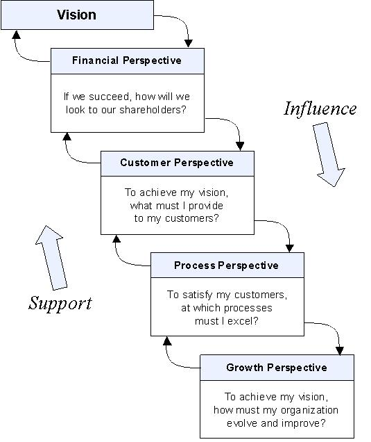
The Financial Perspective is generally used as the top level perspective for all for-profit companies, since the ultimate goal is to grow revenue to increase shareholder value. Everything else (customers, processes, employees, capital assets, etc.) exist to support financial goals. Non-profit companies would generally switch the order and place customers at the top with financials at the second level.
Financial growth generally results from two types of accomplishments: top-line revenue growth through the increased sale of new goods and services, and cost savings through productivity gains and cost reductions. Companies in fast growing, continually evolving industries often focus more on revenue growth. This involves introducing new and innovative products, acquiring companies, and offering revolutionary services that continue to drive gains in revenue. Examples include Google, Sprint, and Comcast. Conversely, companies in established markets tend to focus more on cost savings to increase profits. Ideally, a balance of revenue growth and cost savings will factor into the financial strategy.
In order to increase or sustain top-line revenue, a successful strategy must take into account the customer perspective. Customers are drawn to products and services for a number of reasons including innovation, value, performance, image, and brand loyalty.
Taking a closer look, we can define three generalized categories:
Even though a company may fall squarely into one category, it should still consider strategy that pertains to the other categories. All three are coveted by customers, and often companies offer products and services that appeal in more than one category. For example, automobile manufacturers often advertise new features in ways that attempt to create brand loyalty, while offering price incentives. This has the affect of appealing to all types of buyers with the same advertisement.
The Internal Processes Perspective focuses on all the processes and activities required for a company to excel at providing value to the customers. Processes may be automated, manual, or a combination of both. As customers perceive value in different forms, the types of internal processes that are relevant to strategy vary. Given the myriad processes to choose from, a general classification of four types is suggested:
This perspective tends to begin with a focus on the employees, fostering learning and growth to support business strategy. However, to be effective it must consider the infrastructure of the organization as well. In fact, more recent versions offer four categories of focus:
The following diagram can be used as a template for building the Strategy Map. It illustrates the various categories of each perspective and includes space for the Vision and Mission Statements. In this example, the Learning & Growth Perspective has been renamed Assets. The intent is to recognize that the company has assets at its disposal which should factor into the strategy to support the processes, customer, and financial goals.
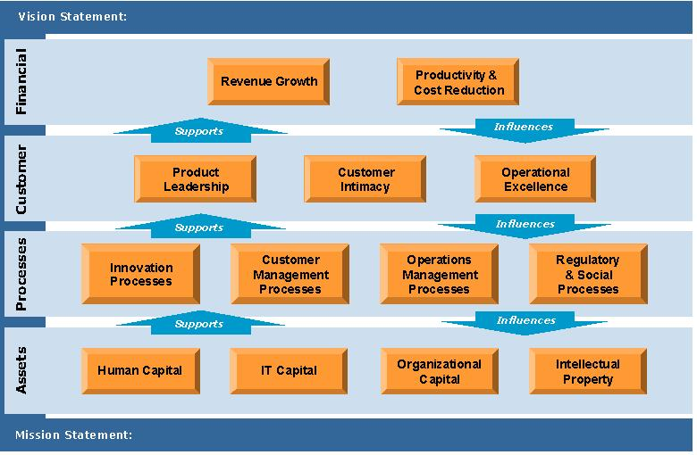
Viewing the perspectives and categories in this way it is easy to draw correlations (linkages) between them. For instance, Innovation Processes (those designed to bring new, innovative products to market) will most likely support Product Leadership, while Customer Management Processes will most greatly affect Customer Intimacy.
The linkages can occur between multiple categories, and can even skip layers. For example, Intellectual Property will often relate to Product Leadership though it may not pertain to any of the Internal Process Perspective categories.
When building the map it is not necessary to define goals for each category. Categories are meant to offer guidance of the types of goals one might consider. Therefore, it is common to have multiple goals for categories that have particular interest to the organization and no goals for categories that are perceived to be of lesser priority.
Once goals have been defined, the linkages between them are added to illustrate the mapping between perspectives. At this point the organization can drill down into each goal to define its strategy to accomplish each goal. We will walk through the process and show an example completed map in the next section of this document.
Ends – general BMM term for all contained below:
Vision – long-term state the enterprise would like to achieve:
Business Aspiration (desired result):
Goal – long-term, focused, qualitative statements of details of the vision
Objective – short-term, quantitative, time-boxed statements of the vision
Means – general BMM term for all contained below:
Mission – long-term activities in which the enterprise will engage to make the vision operative:
Plan (course of action):
Strategy – components of the mission focusing action toward the achievement of goals
Tactic – details of strategies focusing action toward the achievement of objectives
As explained in the Background section, the BMM clearly distinguishes the concepts of vision, goals, and objectives (ends) from mission, strategies, and tactics (means) in order to create a consistent, maintainable “business plan”. Strategy Maps in contrast offer a way to articulate motivation in a business context. They are less concerned with semantics of the model and better equipped to guide an organization through the process of describing its goals. For this reason Strategy Maps are more widely used by the business audience than Business Motivational Models. For this technique, BMM is used as a definition of context of modeling terms and Strategy Maps as the mechanism and general process to collect and represent motivation.
Although Strategy Maps refer extensively to “strategy,” the broader language of BMM provides clearer definitions: specifically, business goals refer to a desired result, while strategy refers to a course of action to achieve that result. What is captured on the Strategy Map itself is a collection of related goals. Since the goals of “lower layers” often support and enable the attainment of goals of layers above it, the lower layers in essence act as strategy, though they are clearly goals by definition. The steps section defines where the actual strategy is developed for each of the goals.
Once the map has been developed, its goals are then decomposed to statements of (time-boxed, quantifiable) objectives. This serves to ground the model in the reality of time, money, and effort. Objectives often require effort from more than one person and frequently cross departmental boundaries. For this reason it is necessary to elaborate on each objective to capture the high level initiatives, (tactics in BMM parlance), that are involved.
The steps described thus far pertain to business motivation, though they almost always result in the definition of initiatives that belong to IT. Since the intent is to justify and prioritize specific IT initiatives, (such as applications, SOA or BPM), the approach includes additional steps to link these types of IT initiatives to the Motivational Model. Hence the Strategy Map demonstrates traceability of strategic IT initiatives all the way up to the Financial Perspective and Vision of the company.
You may find Motivational Models of some form used to support the creation and maintenance of business plans by your customer. If such artifacts are available they should be used as an input to your Motivational Modeling, although they should not be thought of as a substitute. The steps described in the following sections show how these artifacts can be applied to OUM Motivational Modeling.
Regardless of the type of model used, Motivational Modeling is a top-down effort. It begins with a description of why the company exists (Mission), what it stands for (Values), and what it wants to become (Vision). These descriptions should be part of the business model that is created when the company begins doing business. They may persist for the entire life of the business, or evolve over time as markets change.
The Mission and Vision are supported by Goals, Strategy, Objectives, and Initiatives, as depicted in a pyramid form below.
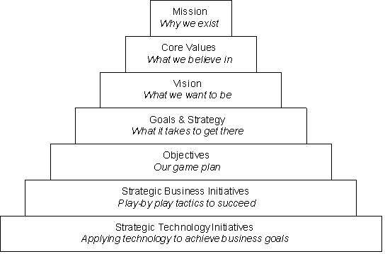
The steps for Motivational Modeling begin with the capture of Mission and Vision statements. It is assumed that they already exist or can be stated without a vendor-supplied process designed to help formulate them. Other inputs may include financial plans, organization charts, and previous strategy plans. As shown below, you may engage at various points depending on which steps have already been completed.
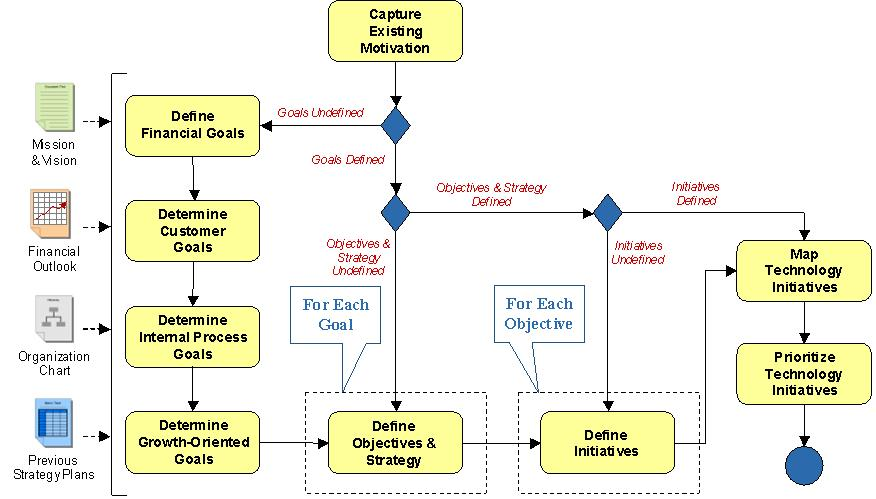
The following sections provide more detailed guidance on the Motivation Modeling steps and shows how the development of a Strategy Map leads to a linkage between business goals and technology initiatives.
1. Capture Existing Motivation
It is likely that an organization has already done some form of Motivational Modeling. Strategy Maps are quite common in the industry, and other processes such as Six Sigma and TQM are also popular. Since the intent is to produce the mapping between IT initiatives and business strategy, it is not important how motivation was captured but what was captured.
If something other than a Strategy Map was used, identify the important concepts that were captured. Using BMM terms, and/or the motivational pyramid scheme previously described, you should be able to identify the Vision and Mission statements as well as the Goals. These points can be transferred over to a Strategy Map for use in further elaboration.
If a Strategy Map exists, you should be able to follow the linkage between perspectives and gain an understanding of what the organization is trying to accomplish and how IT fits into the picture.
Either way, the important outcome of this step is to understand the content and map it to the concepts provided. The existing material can be used in place of a Strategy Map of your own as long as the organization understands how the goals that pertain to IT map to the goals that pertain to financial targets and company vision.
To build your own Strategy Map you first start with the Financial Perspective. Since the ultimate reason for the company is to make money, (assuming that is the case), all other strategy should promote the attainment of financial goals.
Financial goals tend to fall into one of two categories: increasing the top-line (revenue growth), and reducing costs associated with doing business. Companies usually have targets associated with revenue, margin, and profits, although they may be very near-term, e.g., quarterly. The objective of this step is to capture goals that satisfy the financial aspirations for the next 1-2 years. This provides enough runway to establish and complete objectives without becoming too futuristic and far-fetched.For this perspective the number of goals captured should be between two and four. This is enough diversity to provide multiple “angles of attack” without fragmenting the focus. An easy way to ensure at least two goals is to choose one for each category (one revenue growth goal and one cost reduction goal).
If more than four are offered, then similar goals may be combined or others may be eliminated through a prioritization exercise. First, the ratio of growth-to-cost reduction goals should be established. For example, a growth company may choose three growth goals and one cost reduction goal, while a company in a mature market may choose the opposite. Once the ratio is determined then the goals can be prioritized through some form of voting by the contributors, and the top candidate goals are recognized.
The final selections for this perspective should be easy to understand and agreed to by the highest ranking executive(s) involved in this task.
Financial goals, particularly those related to revenue growth, usually have a strong dependency on customers. That is to say, customers must be motivated more-so than before and the company must do something to cause this to happen. Therefore, the strategy for this perspective should focus on what the company is doing to attract more customers and/or to generate more revenue from existing customers.
The intent here is to determine what can be offered to current and future customers in order to realize the financial goals. The answer should take into account the necessary growth rate in terms of number of customers as well as average revenue per customer. All forms of customer revenue should be considered, such as sales, service, support, training, etc.
Common categories for the Customer Perspective include: Product Leadership, Customer Intimacy, and Operational Excellence. These offer a way to examine the means in which growth may occur. If the company is expecting financial growth through the sale of new products and services, then the strategy to achieve it must consider why such products and services would be attractive. Will the appeal come from early adopters that require cutting edge technology? Will it come from a value proposition, i.e. a product does the same for less or does more for the same price? Or, will growth come from satisfied customers that spend increasingly more over time because of great care and relationship building? If the financial goals lean more in the direction of cost cutting, then customer goals will naturally revolve around value (price/feature comparisons) and brand loyalty.
Once this determination is made, customer-oriented goals can be defined that represent improvements in customer value to support the financial goals. A simple way to solicit input is to ask what must be done [for/to] customers in order to achieve each financial goal. Collect the top two for each financial goal and record the top four to six customer goals that are most highly recommended overall. Note these are not objectives, e.g. time-boxed, measurable activities, but strategically aligned goals in support of financial goals. The objectives will be defined later for goals in every perspective (layer) of the map.
4. Determine Internal Process Goals
There are many internal processes being executed at every company; some primarily automated and others not. Though each may have room for improvement, those that factor into corporate strategy should have the greatest attention. Looking at the financial and customer goals is a good way to determine which to prioritize.
Most processes tend to support the operational aspects of the company and are therefore more critical to support cost cutting measures. For instance, automating processes that involve overhead personnel often helps reduce operational costs. Improving processes for procurement and forecasting can help reduce lead times and inventory costs.
Processes that pertain to revenue growth and product leadership may involve new product development, acquisitions, R&D, and the generation of Intellectual Property (IP).
By examining the financial and customer goals captured earlier, one can consider where process improvements may introduce the greatest benefits. Financial goals are generally matched to processes that have the greatest financial upside, i.e., cost and time savings. Customer goals are affected either by processes that directly involve the customer, or those that affect issues important to the customer, such as product quality, price, and innovation.
For each of the goals captured so far, process goals should be considered that would have the greatest impact. The four categories of process goals can be used to help solicit input. They are: Innovation, Customer Management, Operations Management, and Regulatory and Social Processes. Once input has been collected, it should be distilled down to a manageable number, (no more than six), of the most highly prioritized goals. The linkage between goals of different perspectives should also be noted.
The final perspective of the Strategy Map pertains to the assets a company can bring to bear in order to fulfill its vision. Assets include employees (Human Capital), systems (Information Capital), Leadership (Organizational Capital), and IP. The intent of this step is to define goals that position the assets to best support the process, customer, and financial goals of the company.
In terms of employees, the company may wish to develop certain competencies that enable the success of key strategic positions. If, for instance, revolutionary new products were being delivered, then training service and support people in advance of the product release would be important. Likewise, if the company were to branch out into a new market it would need to identify the types of positions required to support that initiative, assess the current workforce, and plan staffing and training accordingly.
Perhaps most important to OUM, the IT goals of the organization must be considered. IT factors into many of the process improvements, customer, and financial goals. Since IT can be a competitive advantage as well as a means for cost savings, it often links to most of the goals in other perspectives. At this level of the Strategy Map you are looking for the top two or three IT goals. Other initiatives within IT are likely to be uncovered and accounted for as other types of goals are processed into objectives and initiatives. Examples could include plans to deploy new systems to drive revenue gains and plans to reduce costs through system rationalization and/or process automation.
Organizational Capital refers to attributes of the organization such as culture, leadership, teamwork, and personal motivation. Improvements in this area are important as the company is often only as good as its people. Having and retaining quality employees underpins many of the loftier goals since a high turnover rate slows progress, drains expertise, and creates a distraction from the business at hand. The current situation should be examined and at least one goal defined to continually improve workforce motivation and morale.
Finally, goals may be defined that pertain to IP. These are more important to companies on the cutting edge of technology or business that rely heavily on IP for a competitive advantage. Goals in this category may include the patenting of new technologies or the development of new consulting materials such as methods and frameworks.
6. Define Objectives and Strategy
Once goals have been defined for each perspective and linkages have been added, the map should look similar to the example provided below.
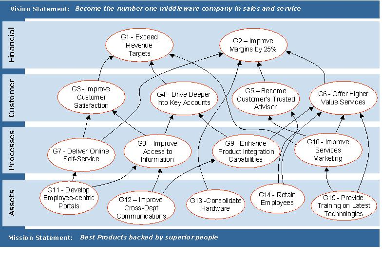
Example Strategy Map
The next step is to process each goal to determine precisely what needs to be done to achieve it, who is responsible for doing it, and when it should be completed. To begin this determination step, each goal is entered into a table that defines the objectives. An example objective table for goal G8 is shown below.
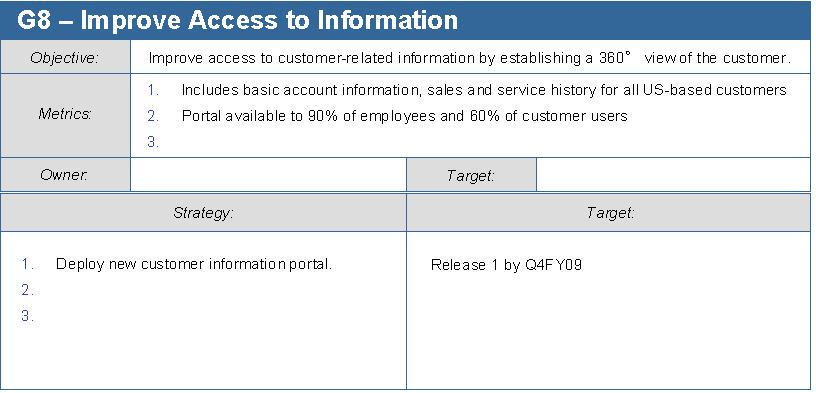
The objective is meant to define the goal in an achievable, measurable, time-boxed way. Using a tabular method you state the objective as a more precise declaration of purpose and provide metrics that help you define completion. The overall objective is assigned an owner and a target completion date.
The objective should sufficiently represent the goal so that when the objective is met, there is consensus that the goal has been attained. Loftier goals may be more difficult to objectify as it may not be intuitive what success looks like or how it should be described. The value of the objective statement is that it clears up ambiguity, which enables a course of action to be established. In some cases it may be necessary to state more than one objective for a goal. In those cases a separate table should be used for each objective and the common goal should be referenced by each.
Note that metrics are not activities to accomplish but ways to measure completion. An objective may require more than one metric. To gather metric statements one should ask: “how will we measure success, i.e. what does success look like?” Attainment of all metrics equates to completion of the objective, and therefore realization of the goal.
Strategy, which is determined next, is where the objective is translated into accomplishments that are required to meet the objective. These are very high level accomplishments, which will be broken down later into more manageable activities. Each element of strategy is assigned a target completion date, which should support the overall objective target date. To gather strategy one should ask: “what must we do in order to attain these metrics?”
Once completed, the table should include the strategy necessary to achieve the goal and the metrics needed to measure that achievement. This step is completed when all goals have been processed into objectives, metrics, and strategy.
Initiatives in this context are equivalent to tactics in the BMM parlance. They refer to the high level activities required to drive toward completion of the strategy. They are very tactical and meant to be treated as assignments with an owner and due date.
Ideally, the sum of all initiatives should equate to the entirety of the strategy, and the sum of all strategies equates to the entirety of the objective. In this way it is possible to accurately track completion of a goal/objective through the status of its initiatives.
An example of an initiative table is provided below.
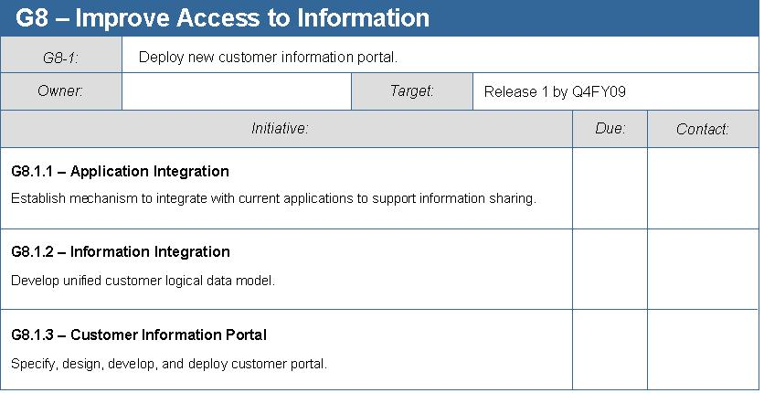
Notice that the table refers to a single strategy defined for the G8 objective. It breaks down the strategy into high level projects or activities that are necessary to support it. The owner and target date are carried forward and each initiative is assigned its due date and contact.
It is here that IT initiatives surface as dependencies on various company goals. Even though the goal may relate to Finance or Customer Perspectives, an element of IT involvement may be included. It also starts to become clear which IT initiatives and processes have the most relevance to business goals.
Once completed, the table should include all initiatives that equate to the attainment of the strategy. In other words, “when these things are done we will have fulfilled the strategy”.
This step is completed when all strategy statements have been processed into initiatives.
Once all goals have been processed down to the level of initiatives, you can begin to view motivation from the perspective of technology. You do this by brainstorming a list of strategic technology initiatives that cross-cut various IT endeavors. Examples include ERP, CRM, SOA, BPM, EDA, MDM, etc. These form one axis of a table while all initiatives from the previous step that relate to IT form the other.
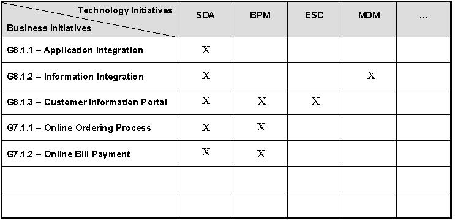
The mapping exercise involves making a determination where each technology initiative applies to business initiatives. The mapping may be somewhat subjective, however it should be supported by text that describes the mapping assignment (not shown). For example, SOA could map to initiatives that have a reasonable chance of providing service candidates or leveraging existing services. Or, it could be mapped to everything that possibly might involve general concepts such as reuse and loose coupling. A certain amount of integrity must be used to avoid overstating the importance of technology initiatives – otherwise the entire mapping exercise becomes a thinly veiled sales tactic.
This step can be accomplished with a small team off people that represent the Enterprise Architecture community and specialists from each technology initiative.
9. Prioritize Technology Initiatives
At this point you should have a clear understanding of how each technology initiative applies to business goals. Now it is possible to prioritize aspects of each technology initiative in order to determine which have the greatest value.
The example below shows how SOA initiatives might be prioritized based on motivation:
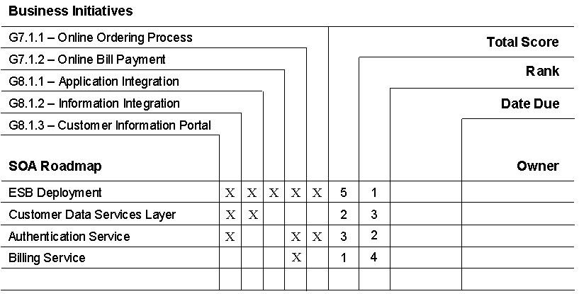
As shown, IT construction that pertains to business initiatives form the higher priority aspects of the Roadmap. A mapping is done to indicate precisely which aspects relate to business initiatives. A simple scoring mechanism (counting the X's) offers guidance on how to prioritize the roadmap. Due dates should correspond to target dates of the business initiatives, e.g., indicate the earliest date something is needed in order to meet due dates of all related initiatives. The owner is someone from IT responsible for fulfillment of that aspect of the roadmap.
Likewise, a similar mapping can be done for BPM. In the example below business initiatives are mapped to business processes, which are then scored, ranked, and assigned. A prioritized BPM Roadmap can be formulated based on business goals, as shown below:
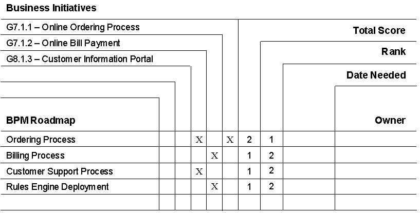
A similar technology mapping should be done for each technology initiative. This provides a clear understanding of how technology initiatives support business goals and offer a way to prioritize IT efforts based on a Motivational Model.
The OUM Motivational Modeling Steps leverage common industry-standard terms and concepts to chart a course for IT that puts it in lock-step with business goals. It also extends these concepts in order to guide technology initiatives towards greater business relevance and value. This task should be performed at regular intervals of one to two years as business strategy evolves and markets change.
The steps outlined in this document represent an overview of BMM and Strategy Maps. A great deal more information can be found online and in books to educate the practitioner of the finer points of each. If the steps are to be executed from start to finish, including the entire strategy mapping exercise, it is recommended that additional reading be done to gain a deeper understanding of the material than what has been presented here. It is anticipated that most companies should already have completed most of the steps up to the point of mapping technology initiatives. If so, then the remainder of the steps should be relatively straightforward to technical practitioners.
| No. | Reference |
|---|---|
| 1 | Basili 88: Basili, Victor R. & Rombach, H. Dieter. "The TAME Project: Towards Improvement-Oriented Software Environments." IEEE Transactions on Software Engineering, Vol. 14, No. 6 (June 1988): 758-773 |
| 2 | Basili 89, Rombach 89: Basili, Victor R. & Rombach, H. Dieter. "The TAME Project: Towards Improvement-Oriented Software Environments." IEEE Transactions on Software Engineering, Vol. 14, No. 6 (June 1988): 758-773. |
| 3 | Building Strategy Maps, Robert S. Kaplan and David P. Norton, 2006 Harvard Business School Press, ISBN-13: 978-1-4221-1613-5 |
| 4 | The Business Rules Group (BRG) Originally a project within GUIDE International, the Business Rules Group is now an independent organization. Membership comprises experienced practitioners in the field of systems and business analysis methodology. BRG is made up of practitioners who work in both the public and the private sectors. BRG formulates statements and supporting standards about the nature and structure of business rules, the relationship of business rules with the way an enterprise is organized, and the relationship of business rules with systems' architectures. The Business Rules Group (BRG): http://www.businessrulesgroup.org The original (BRG) Business Motivation Model (BMM): http://www.businessrulesgroup.org/bmm.shtml |
| 5 | Goal Driven Software Measurement - A Guidebook, 1996, Software Engineering Institute, Carnegie Melon University http://www.sei.cmu.edu/publications/documents/96.reports/96.hb.002.html. |
| 6 | Kaplan, Robert S. and David P. Norton. 1996. The Balanced Scorecard. Boston, MA: Harvard Business School Press. |
| 7 | Kaplan and Norton Evolution of Balanced Scorecard to Strategy Maps: http://en.wikipedia.org/wiki/Strategy_map |
| 8 | Object Management Group (OMG) - OMG™ is an international, open membership, not-for-profit computer industry consortium. OMG Task Forces develop enterprise integration standards for a wide range of technologies, and an even wider range of industries. OMG’s modeling standards enable powerful visual design, execution and maintenance of software and other processes. OMG’s middleware standards and profiles are based on the Common Object Request Broker Architecture (CORBA®) and support a wide variety of industries. All of their specifications may be downloaded without charge from their web site. The Object Management Group: http://www.omg.org/ Catalog of OMG Business rules and Process Management Specifications: ttp://www.omg.org/technology/documents/br_pm_spec_catalog.htm OMG Business Motivation Model: http://www.omg.org/cgi-bin/doc?dtc/2007-08-03 OMG Semantics of Business Vocabulary and Business Rules: http://www.omg.org/spec/SBVR/1.0/ OMG Business Process Modeling Notation: http://www.omg.org/cgi-bin/doc?dtc/2007-06-03 OMG Business Process Definition Meta-Model: http://www.omg.org/cgi-bin/doc?dtc/2007-07-01 OMG Business Process Maturity Model: http://www.omg.org/cgi-bin/doc?dtc/2007-07-02 |
| 9 | Rombach 89: Rombach, H. Dieter & Ulery, Bradford T. "Improving Software Maintenance Through Measurement." Proceedings of the IEEE, Vol. 77, No. 4 (April 1989): 581-595. |
| 10 | Since 1984, the Carnegie Mellon® Software Engineering Institute (SEI) has served the United States of America, as a federally funded research and development center. The SEI staff has advanced software engineering principles and practices and has served as a national resource in software engineering, computer security, and process improvement. As part of Carnegie Mellon University, which is well known for its highly rated programs in computer science and engineering, the SEI operates at the leading edge of technical innovation. The Software Engineering Institute (SEI): http://www.sei.cmu.edu/ Balanced Scorecard: http://www.sei.cmu.edu/publications/documents/03.reports/03tn024.html |
| 11 | SMART (Specific Measurable Achievable Relevant Time framed): http://en.wikipedia.org/wiki/SMART_%28project_management%29 |
| 12 | Strategy Maps: http://www.valuebasedmanagement.net/methods_strategy_maps_strategic_communication.html |
There are no templates available to assist with this technique.
This technique is recommended for use in the following OUM tasks:
| Task | Usage |
|---|---|
| Use this technique to understand Motivational Modeling. | |
| Use this technique to understand Motivational Modeling. | |
| Use this technique to understand Motivational Modeling. |
Use the following criteria to check the quality of this technique:

Copyright © 2006, 2016, Oracle and/or its affiliates. All rights reserved.